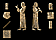
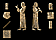

Reed stylus
Scribes created the wedge shapes which made cuneiform signs by pressing the stylus into a clay or wax surface.  |

Reed stylus
Scribes created the wedge shapes which made cuneiform signs by pressing the stylus into a clay or wax surface. |